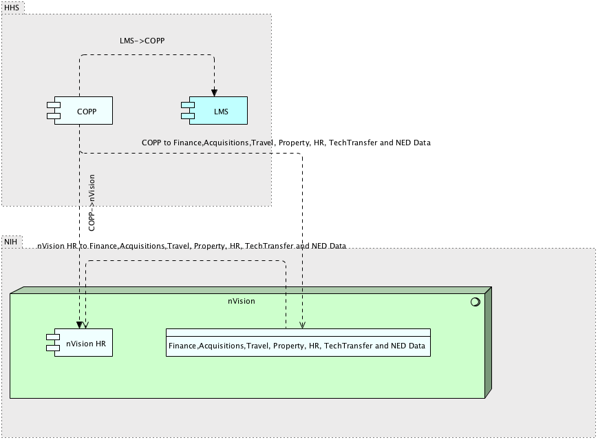

|
|
|
COPP : Application Component (in HR Systems diagram / LMS ArchiMate Diagram / COPP ArchiMate Diagram / nVision HR ArchiMate Diagram / NCI Business Applications Archimate Diagram)
ArchiMate Diagram - COPP ArchiMate Diagram
 link
link
| Jump to: |
|  |
| Model Elements |
| Name | Description | ||
|
|
Connections to database is provided by TNS connection rows a user is allowed to see is limited by VPD by there institute.
Contains:
HR data - Pay Biweekly, Demographics daily, Commission COR pay and FELLOWS is monthly
Finance data - is daily accept for commitments and obligation which is once an hour.
Travel - nightly
Property - nightly
Grants - nightly
NED - daily
Tech transfer - ?
Acquisitions - nightly.
FPS - is months
NOTES : Source data from POTS and AMBIS (acquisitions related). NBS only gets financial's from pots. Approvals, and specifics(vendors quantity) are gotten directly from POTS.
AMBIS only used by MIAID NBS gets just enugh for a requisitions |
||
|
|
nVision HR – Consolidated and integrated HR reporting. Facilitates data driven decision making. Create and share customized reports for FTE and non-FTE staff including personnel costs, FTE usage, aggregated workforce demographics, status of personnel actions, fellowship costs and status. NED tracking history movement within directory system from org to org. Provides Complete staff picture for each IC, develop custom reports, track all staff(contractors, FTEs Fellows), export to PDF, ability to create planning records to project future needs, dashboards and alerts.
Sources
|
||
|
|
|||
|
|
HHS Learning Portal (LMS) – Place to search for HHS instructional class.
|
||
|
|
|||
|
|
https://nvision.nih.gov/nvision_registration/registration_guide.html#IntroductiontonVision
Contains
HR Data
nVision to K2 Process Script nVision data can be received by K2 by means of a K2 Process Script. |
||
|
|
|||